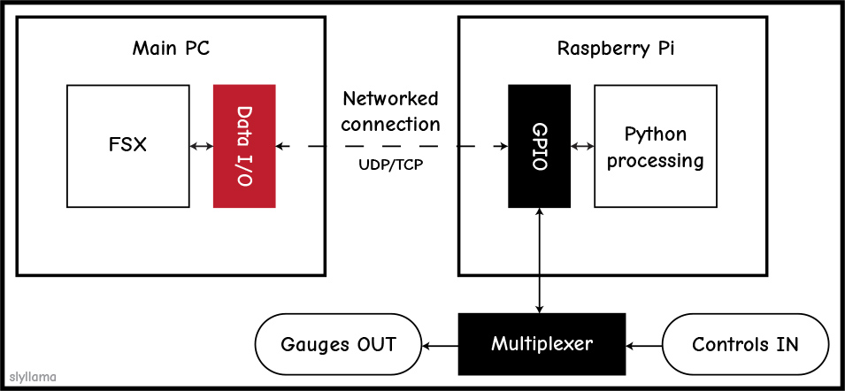
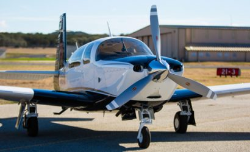

Sly Llama, July 2020
First of all: check out this insane home cockpit…

Hardware/software structure concept for our set-up.
Well, I may have finally made some progress into getting external programs to communicate with FSX, so that I can send data to fabricated gauges and receive information from hardware switches using the RPi. I’d been totally lost on the FSX side of it for a while, so I gave in and asked a question on a flight simulation forum. A response directed me to the FSUIPC SDK (that I’d totally missed): and this seems to be just right for what I need. It has two main features of importance: (a) “FSInterrogate”, which allows one to assess all of the memory values and types that FSUIPC stores, and (b) pyuipc, a module for tying FSUIPC integration into Python programs (which also allows us to send and receive data via UDP/TCP). Sounds promising! The pyuipc documentation is very sparse, but I found a simple Git project which shows us most of this functionality. Let’s hope that we can get it all working tonight.
P.S. I might switch from the Cessna to the Mooney Bravo for future flights…?

Credit: Flying Magazine.